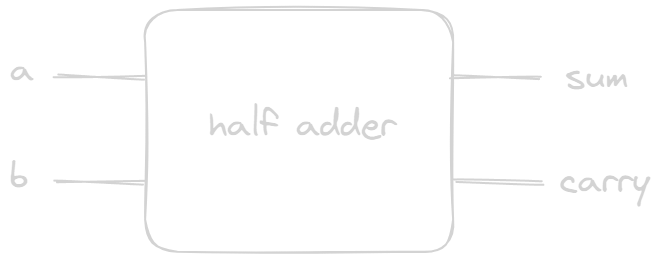
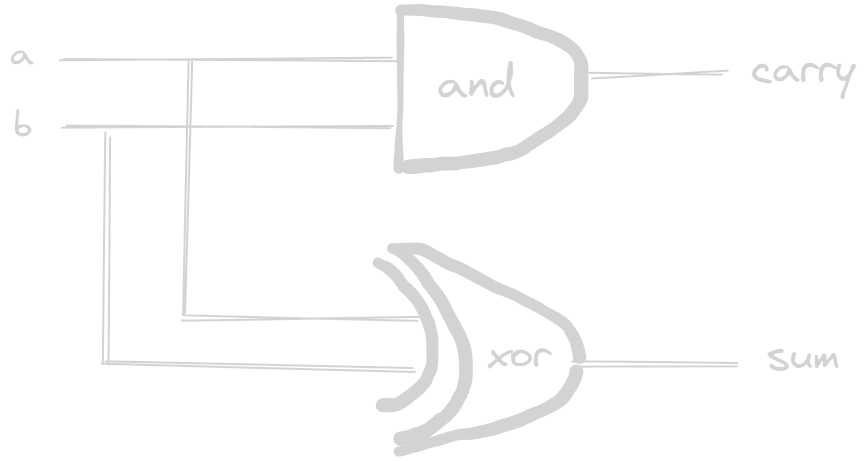
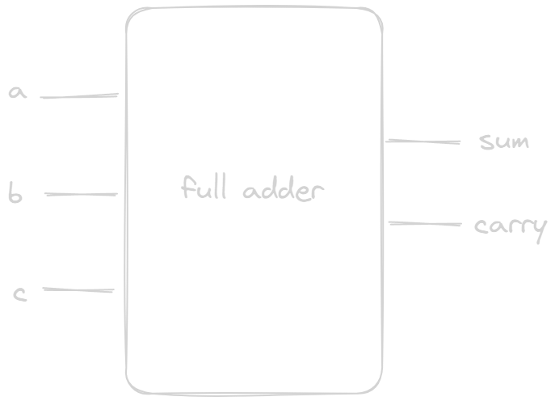
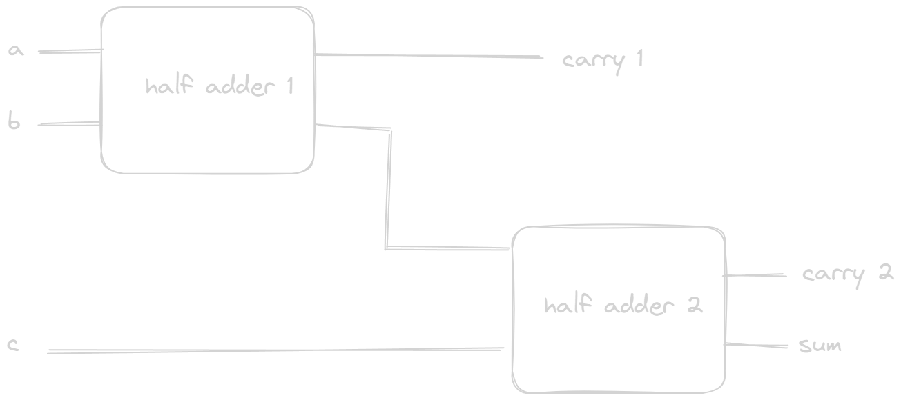
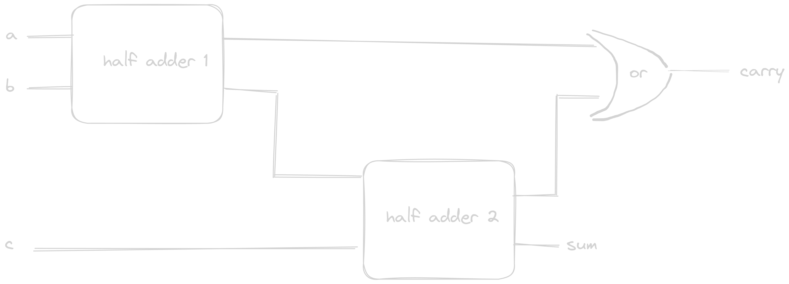

ALU
Half Adder
The first step is to add two 1-bit numbers. The largest possible result is 2 (1+1). However, computers only recognize the digits 0 and 1. To handle this, we follow a process similar to how we count in decimal. For example, when counting, we go from 1, 2, 3, …, 9, and then to 10, adding a 1 to the tens place and resetting the ones place to 0 because we’ve run out of unique digits. In binary, the same principle applies. We count 0, 1, 10.

We’ll refer to the result in the ones place as the sum. Since we’re working in binary, the carry represents the twos place instead of the tens place, as it would in decimal.
| a | b | sum | carry |
|---|---|---|---|
| 0 | 0 | 0 | 0 |
| 0 | 1 | 1 | 0 |
| 1 | 0 | 1 | 0 |
| 1 | 1 | 0 | 1 |
By focusing on the sum and carry columns in isolation, we can immediately identify previously built logic gates that correspond to these results. sum can be represented with XOR, and carry can be represented with AND.

Full Adder
The full adder takes three 1-bit inputs.

The maximum result is now 3 (11 in binary).
| a | b | c | sum | carry |
|---|---|---|---|---|
| 0 | 0 | 0 | 0 | 0 |
| 0 | 0 | 1 | 1 | 0 |
| 0 | 1 | 0 | 1 | 0 |
| 0 | 1 | 1 | 0 | 1 |
| 1 | 0 | 0 | 1 | 0 |
| 1 | 0 | 1 | 0 | 1 |
| 1 | 1 | 0 | 0 | 1 |
| 1 | 1 | 1 | 1 | 1 |
A full adder can be constructed using two half adders. Here’s how:
- half adder 1
- Use a half adder to add the first two inputs, a and b.
- The output will give us two values:
- sum: Represents the ones place.
- carry: Represents the twos place.
- half adder 2
- Next, we add the third input, c, to the sum obtained from the first half adder (sum + c).
- We add these together because they belong to the same place value (ones place).

Identifying the correct carry
the above logic leaves us with two carry outputs—one from each half adder. Question is: Which carry should we use?
consider the following cases:
case 1: carry1 = 1
- If the first half adder’s carry output (carry1) is 1, it means the initial sum (sum1) must be 0 (refer to half adder’s truth table).
- When the second half adder processes sum1 + c, it must be 0 + c. This combination can never produce a binary result of
10, so carry2 must be 0. - In summary: If carry1 = 1, then carry2 = 0.
case 2: carry1 = 0
- If carry1 is 0, the intermediate sum (sum1) could be either 0 or 1.
- Consequently, the second half adder (sum1 + c) might produce a carry (carry2) of 0 or 1.
The takeaway is that carry1 and carry2 will never both be 1 at the same time. Therefore, the final carry output for the full adder can be determined by taking the OR of these two values.
